a digital scrapbook, made with 11:30 PM guilt and a lot of love
I forgot.
Before anything else, Tissue, I want to say I'm sorry.
I won't make excuses for forgetting your birthday. You deserved to be wished the moment your day began, and I am genuinely sorry that I missed it.
Of all the people to forget, it had to be you — the eldest daughter of this strange little family of five we've somehow built out of nothing but friendship and bad decisions.
But since I have already managed to become the world's most guilty friend…
I decided to make you something instead.
So, welcome to a very late, slightly chaotic, but very heartfelt little scrapbook about you.
That's you below, standing under a banner someone else strung up for you, glowing like you always do in photos — completely unaware that a few hours later, on the other side of the day, I'd still be here, guilty and scrambling to make this instead.
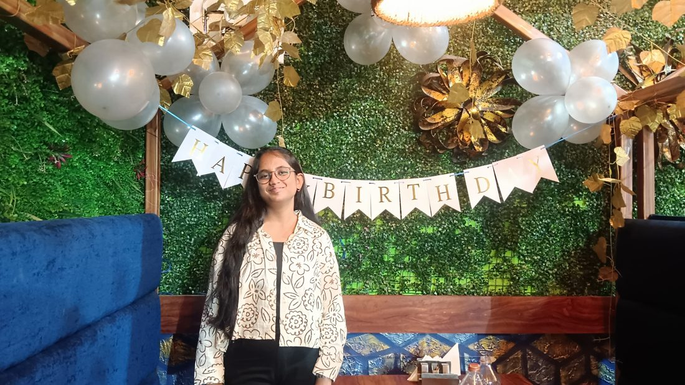
Now turn the page. →
Once upon a time, there was a girl called Shruti.
At first, that's all I knew you as.
This quiet little "nerd" who somehow ended up in our lives.
And little did I know that behind that name was someone so delicate, precious, caring, and beautiful.
I didn't know then that you would become one of those people whose absence would actually be felt.
I didn't know that one day, "Shruti" would become "Tissue."
And I definitely didn't know that Tissue would become family.
I definitely didn't know how hard you'd work, quietly, for everyone else in this family before you ever worked for yourself. Or how much of what holds the five of us together, we owe to you without ever really saying so.
Here's the honest part: I went looking for a photo from the very beginning, from whenever this actually started, and there isn't one. We just weren't the kind of people who thought to save it — we were too busy living it to photograph it.
So the photo below isn't from the start. It's from much later, near the end of our college days. It's not even the oldest photo we have of us — but it's the one that best captures how it felt, and it still somehow looks like the beginning of something — two people who'd already quietly decided this was going to last.
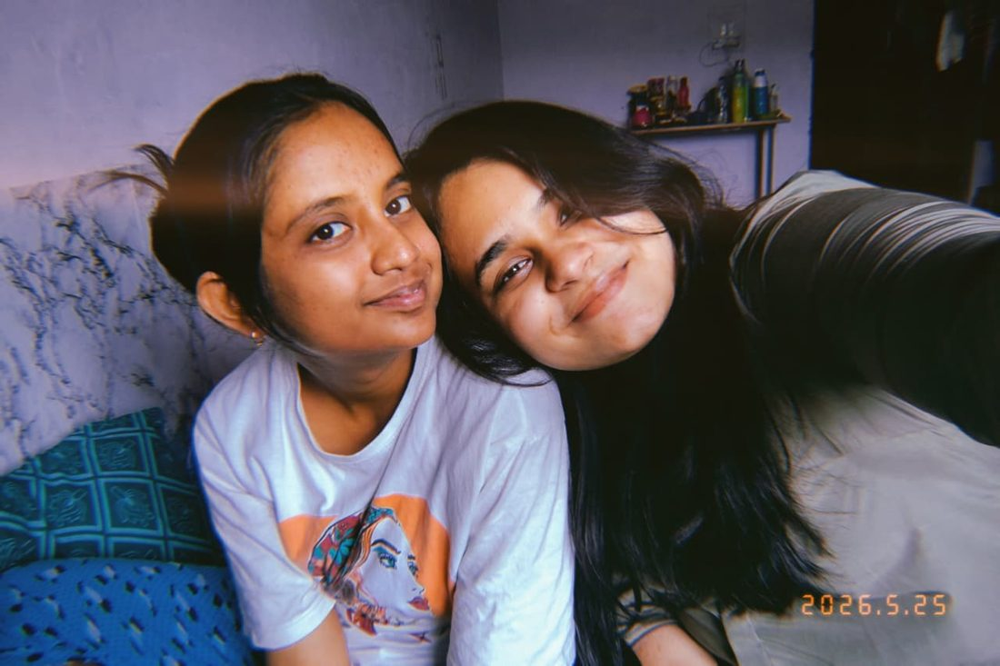
Maybe "Tissue" was always the perfect name for you.
A tissue is delicate. Soft. Gentle in a way that asks to be handled with care.
But it is also something we instinctively reach for when we need comfort, care, or simply something to wipe away a tear.
And somehow, you have been that for all of us.
You may be delicate at heart, but there is so much strength, warmth, and love in you.
You have this strange way of being soft without being weak.
And I think that's one of the things I love most about you.
Even the way you talk gives it away — your andaaz, that very specific, very-you way of saying things, half-serious and half not, that nobody else could copy even if they tried. It's one of those small things that somehow says everything about who you are.
Those flowers you're smiling under were growing on our own college campus — which, honestly, might be the only reason we owe that place any gratitude at all. Assignments, deadlines, exams we didn't study for — none of that we miss. But college gave us you, and for that alone, we'd go back and sit through all of it again.
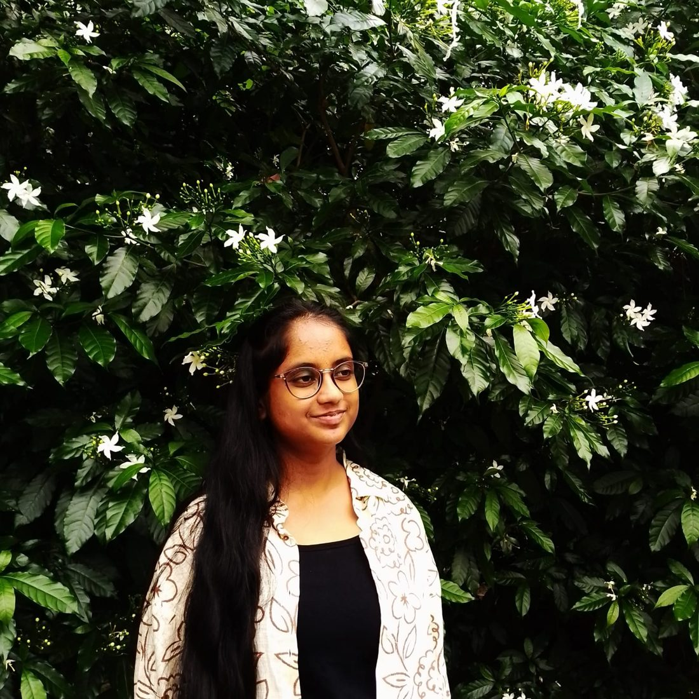
Some things about you are so easy to miss, because you never point them out yourself. So here's a few, written down before we forget to say them out loud — next to a photo that just feels like you: temple lights behind you, half a smile, completely unposed.
Some of these took years to even notice. Some, you never told us outright — we just slowly understood them, watching you, loving you.
(tap each note)
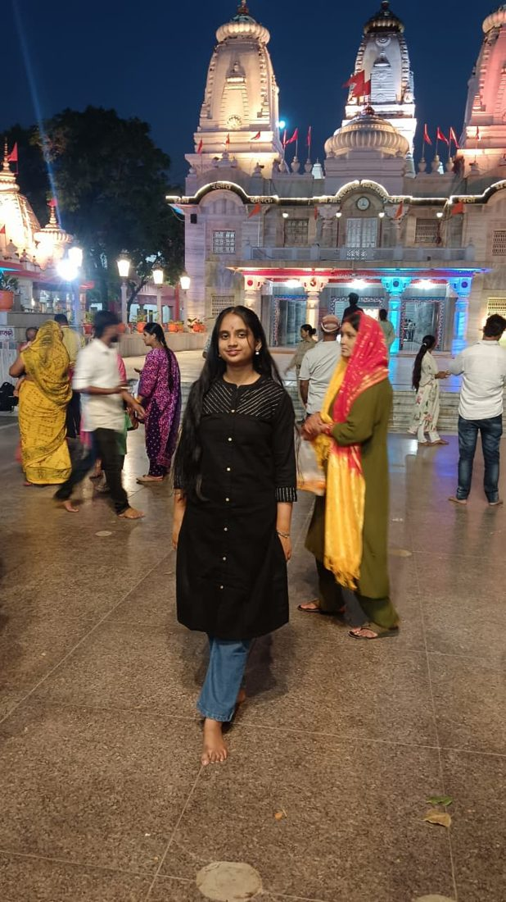
Now for the important part: proof that we have actually spent an unreasonable amount of time together.
Half of these exist because you said something completely innocent, and within three seconds we'd already turned it into something else — unintentionally, every single time, and somehow that's exactly what makes these pictures feel like us.
There's the cheek kiss caught mid-laugh under a rainbow flare that neither of us planned — the kind of accidental beauty you couldn't recreate if you tried. There's the one in office clothes, all crisp collars and zero professionalism, because apparently even work clothes couldn't make us behave.
And then there's the one that isn't even really a group photo. That's just you, caught candidly in the frame while my girlfriend and I were mid-kiss right beside you — and you're looking over at us with the most done, most unimpressed expression a camera has ever caught by accident. Nobody asked you to pose. Nobody planned it. It's just you, existing in our chaos, completely unbothered and mildly judging us, and somehow it's become one of our favourite photos we own.
There's you fixing your hair mid-getting-ready, not even pretending to notice the camera. There's the most focused I have ever seen you look at anything in your life, and it was over frosting on a cake. And there's the rickshaw ride, twice over — once mid-sentence, mid-thought, still talking about whatever nonsense we were talking about, and once a few minutes later when we finally remembered to look at the camera and actually smile.
Every picture here carries a tiny piece of our story. Some are beautiful. Some are embarrassing. Some should probably never see daylight again.
But all of them are ours. And honestly, I wouldn't trade any of them.
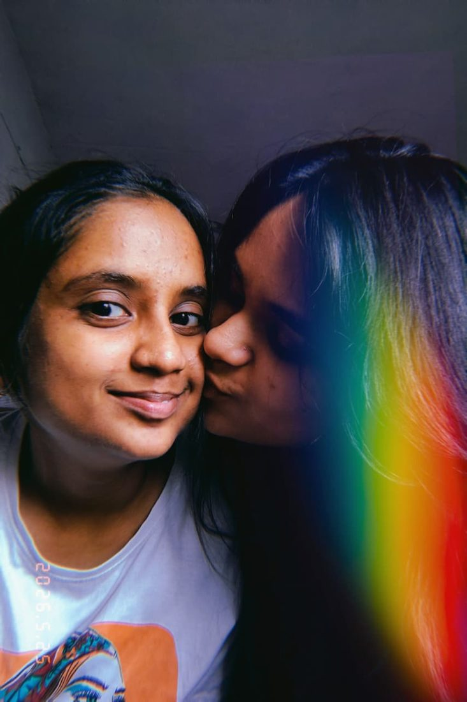
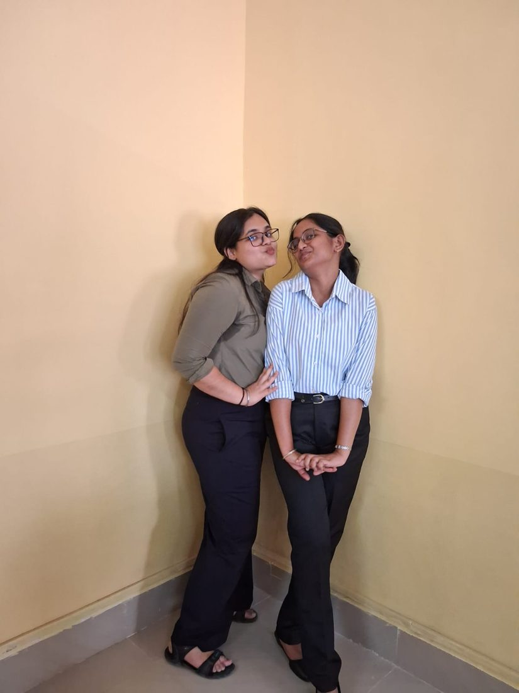
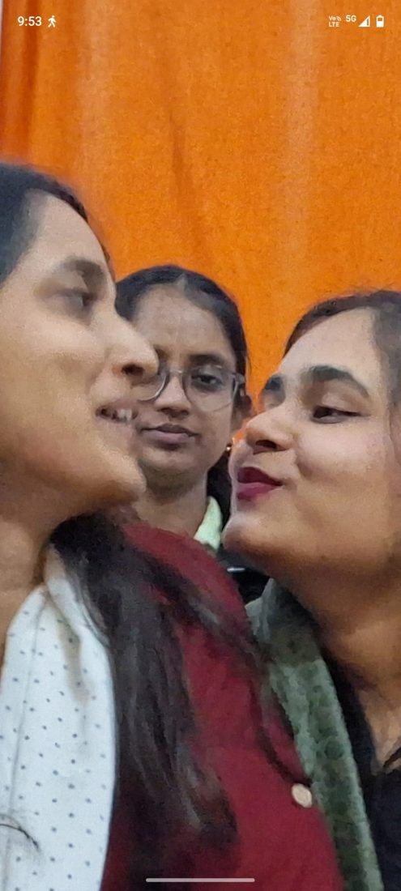
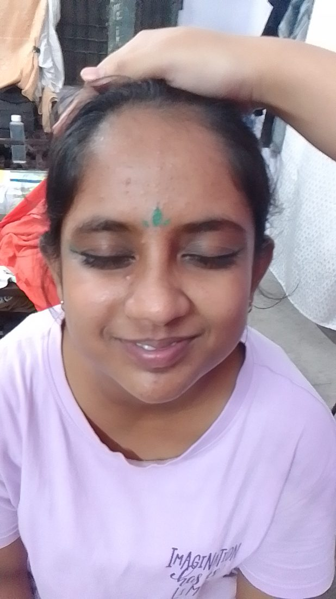
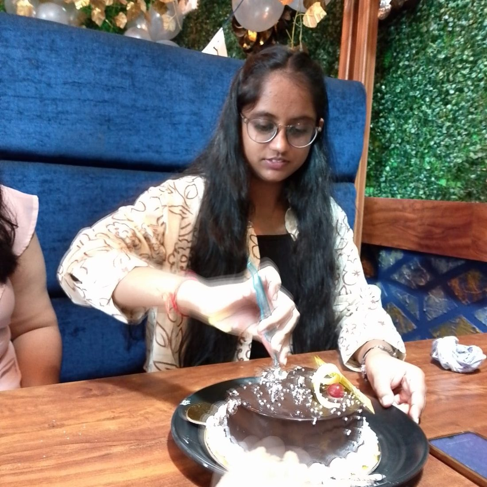
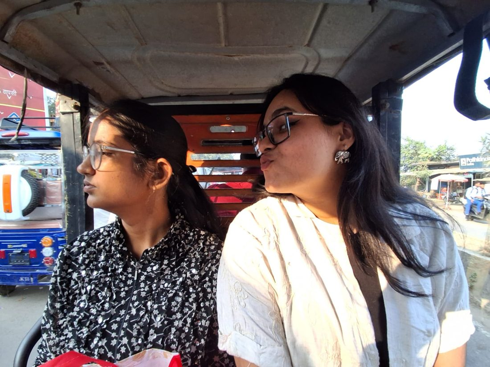
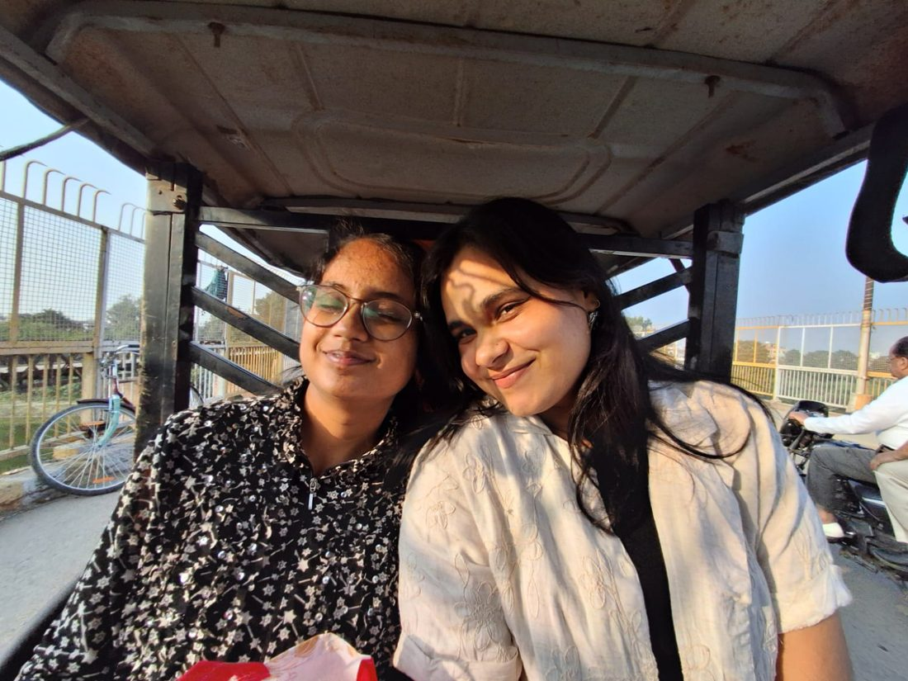
There are some things that simply cannot be explained.
The jokes that started from nowhere. The conversations that should never be repeated. The incidents that became legends. The things that only make sense because we were there.
This is our little collection of chaos — the nonsense, the "remember when…" moments, the private language we built without ever meaning to.
The kind of memories that don't look important while they're happening, but somehow become the ones you miss the most.
And honestly, so much of our lore exists because of you specifically — your andaaz, that very particular, very-you way of saying things. You'll say something completely innocent, and within seconds the rest of us have turned it into something else entirely. You never mean to be funny. You just are, constantly, effortlessly, and half the time you don't even realise what you've just said until we're already crying laughing.
Take the candid on the left — half-caught, slightly overexposed, completely unplanned. It shows up in our group chat almost every month, no caption, no context needed, just this exact face, and somehow it never stops being funny. None of us even remember who took it anymore. We just know it's yours, and it belongs to all of us now.
And the one on the right is from a night that had absolutely nothing riding on it — pajamas, peace signs, a bed that definitely wasn't meant to be jumped on. Nothing about it was planned or important. And yet it's one of the photos we go back to the most, because it's just so completely, unguardedly you.
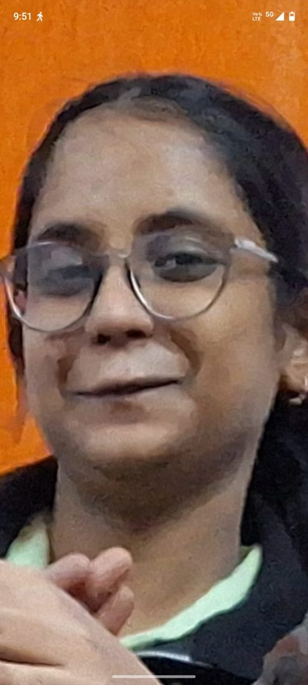
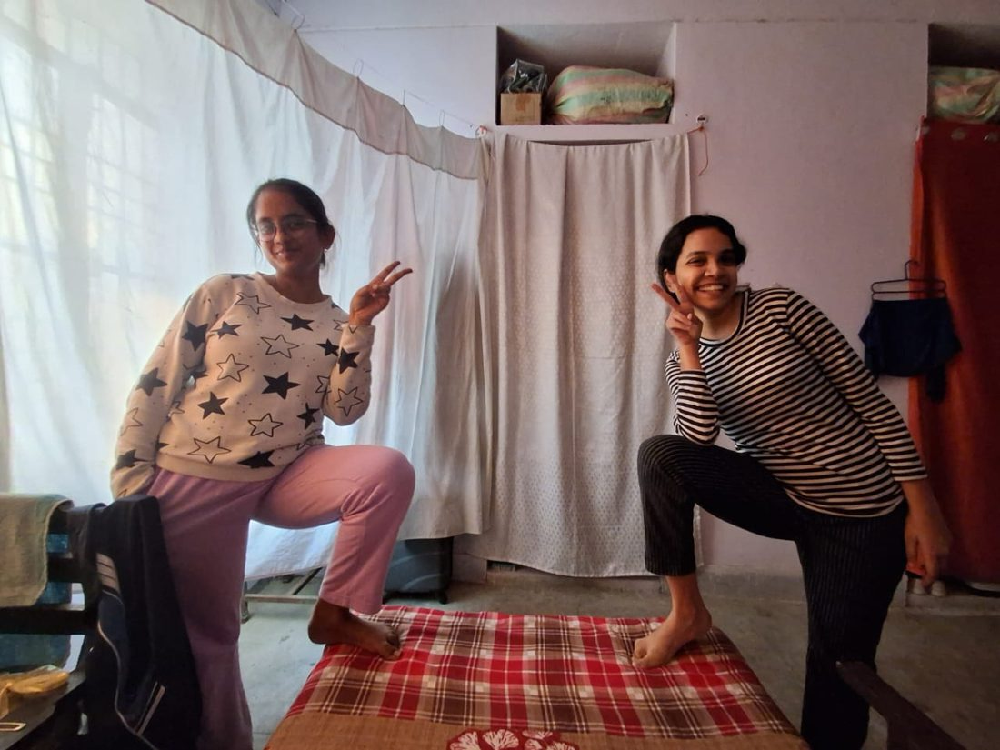
Of all the things I expected our last day of college to be…
Tissue asking us to teach her cuss words was NOT on the list.
See, Tissue had always been the innocent one. She somehow understood every double-meaning joke we made. She knew exactly what we were talking about. She just… never participated.
She would sit there, understand everything, and somehow still maintain her innocent little face.
Or so we thought.
Because on our last day of college, something happened. Tissue looked at us and basically said:
"Teach me some cuss words."
And we were like— EXCUSE ME? Who are you? What have you done with our Tissue?
And apparently, learning a few cuss words wasn't enough. She wanted to know what they meant. So there we were, on the LAST DAY OF COLLEGE, looking up meanings together.
And watching Tissue say those words with that completely innocent face was genuinely one of the funniest things I've ever witnessed. It was like watching a very polite person discover an entirely new language.
And because apparently normal cuss words weren't creative enough… we invented our own.
A completely unnecessary contribution to the Hindi-English swear-word dictionary. And somehow, Tissue participated. Our innocent Tissue. On the last day of college.
Character development: 100/10.
Maybe that's why I remember that day so fondly. It wasn't just funny — it felt like we got to see a slightly different version of you. The version that was comfortable enough to be ridiculous with us.
And honestly, that day wasn't even an exception. It happens more than you know — you say something completely innocent, and within seconds, we've turned it into something else. You never see it coming. That's what makes it funnier every single time.
And honestly, I hope we never stop being the kind of people who can bring that version of you out.
P.S. We are absolutely never letting you forget this.
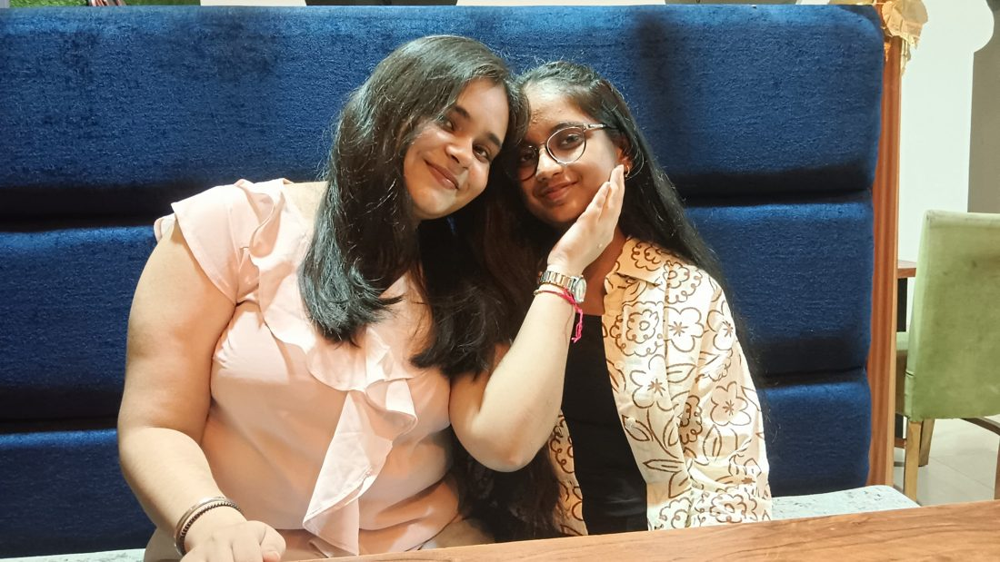
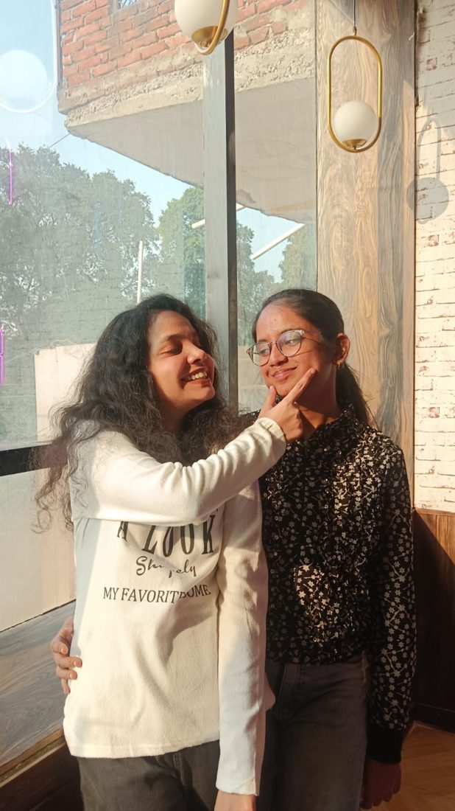
Somewhere along the way, you stopped being just a friend.
You became family.
Meri beti. Our eldest daughter.
We're a family of five now, technically speaking — five friends who somehow started functioning like something closer to family, complete with roles nobody assigned but everybody fell into anyway. And you became the eldest daughter of the lot of us, whether you asked for the title or not.
It suits you, honestly. You worry about everyone before you worry about yourself. You show up before anyone even has to ask. You hold things together quietly, without ever making it about you, the way the eldest always somehow ends up doing.
The one we love, worry about, tease, protect, and cherish more than you probably realise.
You lean in without even thinking about it now — cheek to cheek, like it's nothing, like it's always been like this. And you still can't resist the universal younger-sibling move: pinch the cheeks, call it love.
You came into our lives unexpectedly. But today, it is impossible to imagine our family of five without its eldest daughter.
Funny how some people arrive without warning and then quietly become permanent.
If I could give you anything for your birthday, I don't think it would be something I could wrap in paper.
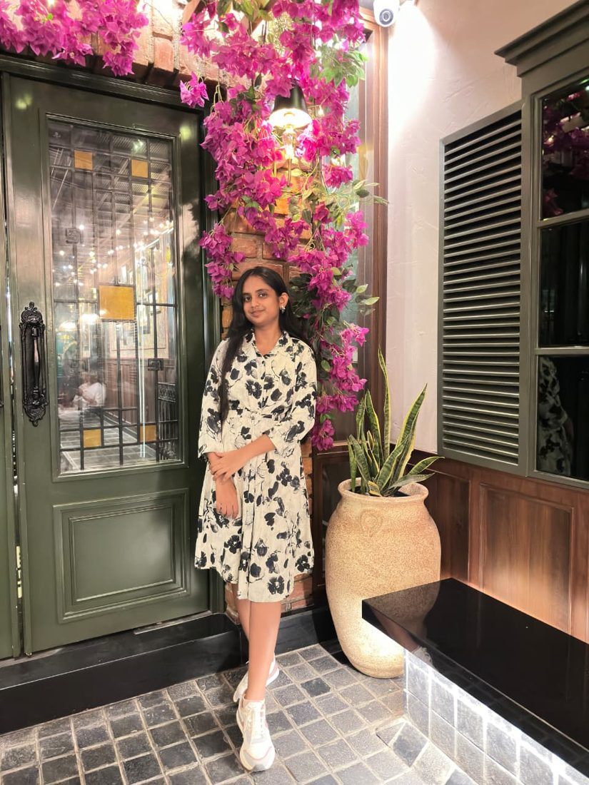
That's you on the right, dressed up and glowing — and honestly, that's exactly the way we hope you learn to see yourself. Not just on the days you're dressed up for it. Every day.
Precious. Beautiful. Strong. Soft. Loved.
(click the envelope)
Happy birthday, meri pyaari Tissue. ❤️
I hope life becomes gentler with you.
I hope the years ahead bring you the peace you deserve, the happiness you have earned, and people who make you feel as cared for as you make everyone else feel.
I know some of what you've carried wasn't easy to hand over to us, and it took time before you did. Thank you for trusting us with it. We know it wasn't small, and we don't take it lightly.
You work so hard, for so many people, and I hope somewhere in all of that you remember to be a little hardworking for yourself too — your own peace, your own rest, your own happiness.
I hope you never forget how precious you are to us.
Keep your beautiful heart. Keep being you — andaaz and all, the comedy you don't even know you're doing, all of it.
And please remember that no matter how unexpectedly you came into our lives, you are very much a part of our family now — our family of five, and its eldest daughter.
I love you more than words can ever properly say.
And yes… even if I forgot the date, I could never forget what you mean to us.
So, Tissue…
You may have entered our lives unexpectedly.
But somewhere between the laughter, the chaos, the stupid conversations, the difficult days, and everything in between—
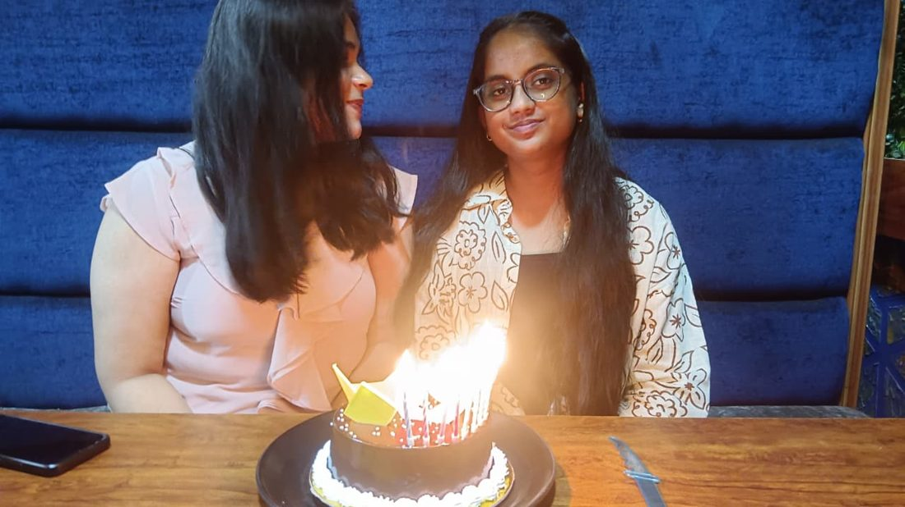
That's the quiet second above, before the wish, before the noise — just candlelight, right before everything got loud again.
And homes aren't forgotten.
Dates might be. People aren't. Eldest daughters, especially, aren't.
Happy birthday, meri pyaari Tissue. ❤️
I am sorry I was late.
But I hope this little scrapbook reminds you that you are loved long after your birthday ends.
— from someone who is very, very sorry and very, very lucky to have you.
No. One last thing.
This scrapbook is only one person's version of how much you mean to us. So here's a little collection of messages from the rest of your family of five — the people who love our eldest daughter too.
And if there's one more thing every single one of us agrees on, spoken or unspoken: you've carried more than any one of us fully knows, and it took you a long time before you let any of us see it.
That you trusted us enough to let us in — that means something we don't take lightly, eldest daughter. We're grateful, more than this little scrapbook could ever really say.
And below is us — the whole family, in the wild, the way we hope to always be. Close, loud, cheek to cheek, and completely, unfixably ourselves.
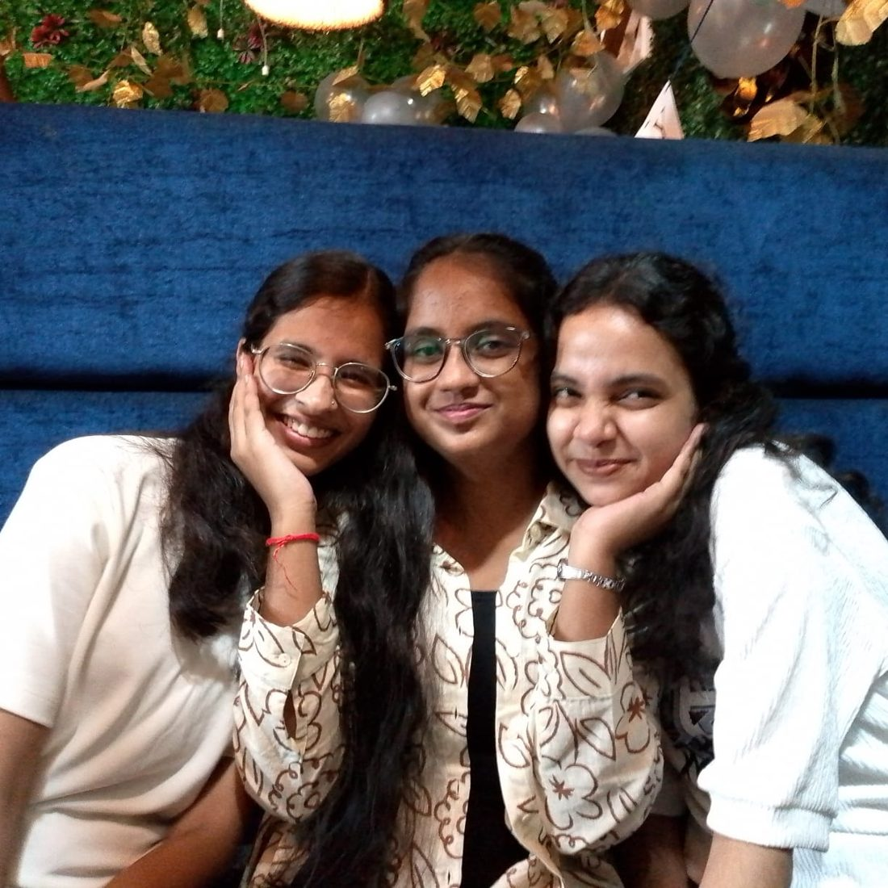
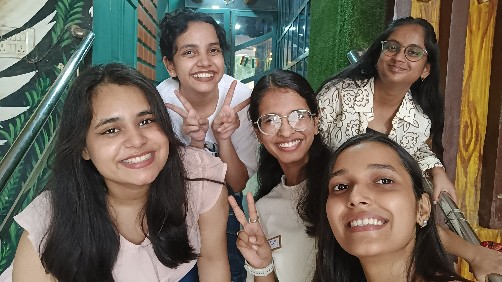
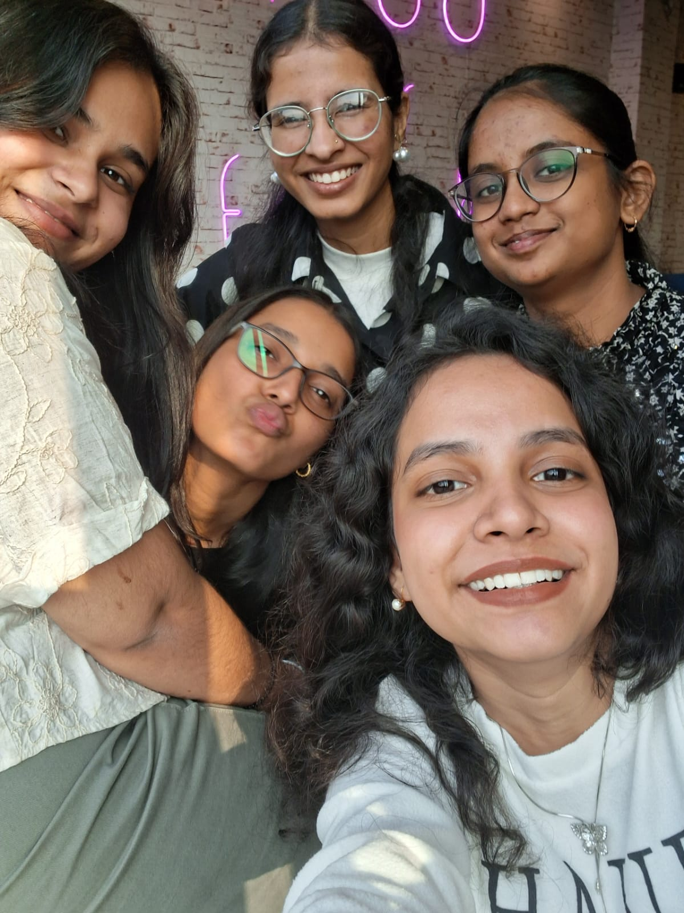
Happy birthday, Tissue. You are loved. More than you know.
tap outside to close